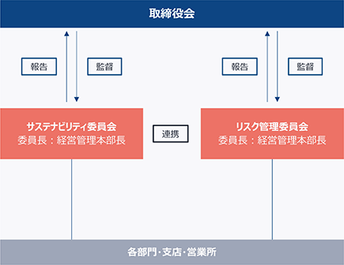
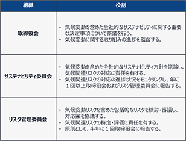
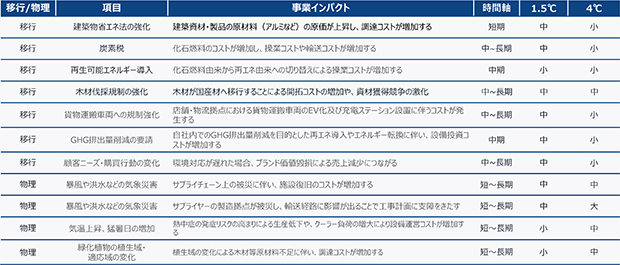
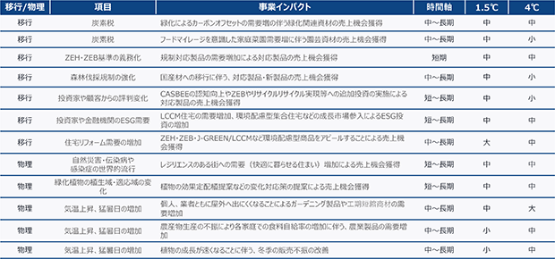

文中の将来に関する事項は、当連結会計年度末現在において、当社グループが判断したものであります。
当社グループは、基本コンセプト「やすらぎのある空間づくり」に基づき、住まいの庭空間を構成する各種庭園資材を提供し、その結果として安定した業績と適正な利益を確保することを経営の基本としております。
国内の販売経路につきましては、住宅メーカー、建材商社ルート、造園資材ルート、ガーデンセンター、ホームセンター、通信販売、大型家具店等多岐にわたり、多角的に展開しております。
また、海外の販売経路につきましても建材商社ルート、ガーデンセンター、ホームセンター、通信販売等多角的に展開しております。
市場ニーズが多様化する状況下において、常に新商品の開発に注力し、国内外の自社工場で製造することに加え、中国をはじめ海外の主力メーカーと技術提携し、ユーザーニーズを的確に収集して迅速に対応するため、子会社との技術提携を含む海外企業との強固な協力関係を築いております。
企業競争力の原点は開発力にあることを認識し、会社の総力をあげて新商品開発、販路の開拓ならびに販売力の強化に努め、今後のトレンドを的確に掴み、販売店およびメンテナンス店の販売網サービス体制の充実等、地域販売戦略を展開してまいります。
販売促進面では、DX（デジタルトランスフォーメーション）によるWEB上での販促ツール（WEBカタログ、WEBショールームほか）の展開、テレビCM、SNS、専門誌等での広告、商品展示会、総合カタログの配布、インターネットを利用したWEBカタログ等、販路拡大と新商品の市場浸透を積極的に図っております。
当社は、業界トップ企業としての責任と誇りをもち、顧客の信頼を高め、その綿密な関係の維持増進を図ってまいります。また、経営の合理化と効率化につとめて一層の経営基盤の強化を図り、業績の向上に努めてまいる所存であります。
当社グループは、基本コンセプトである「やすらぎのある空間づくり」に基づき、様々な住まいの庭での暮らし方を提供することで売上の拡大を図ってまいります。
販売戦略といたしましては、現場に合わせて製造・提供できる「マスカスタマイゼーション」に基づく商品開発ならびに生産体制を構築することで販売力の強化を図ってまいります。また、ガーデニング市場における情報発信を目的としたWEBプラットフォーム『GARDEN STORY（ガーデンストーリー）』により、プラットフォームビジネスの強化を図ってまいります。
商品戦略といたしましては、デザイン、品質、省エネをテーマとした商品開発に注力してまいります。そのため、ガーデニング市場におけるトレンドの発信を目的とした研究開発の構築により高付加価値型商品の開発を増進することで売上の拡大を図ってまいります。
IT戦略といたしましては、インターネット環境による受発注システムの開発により、迅速かつ的確な対応を可能とし、社内業務体制における生産性の向上を目的としたシステム構築を目指すとともに、DX（デジタルトランスフォーメーション）の推進により顧客に対するサービス向上を図ってまいります。
さらに、公開企業の責務として、適切かつ健全な経営活動をタイムリーな情報開示によって皆様にお知らせし、資金調達を間接金融だけでなく資本市場に求めるとともに知名度の向上、優秀な人材の確保に努め、強固な経営基盤を確立していきたいと考えております。
当社は、目標とする経営数値を定めておりませんが、企業の成長性を判断する際の売上高と収益力を判断する際の売上総利益率および経常利益率を重要な指標と位置付けて継続的な向上を目標としております。
今後の当社グループを取り巻く経営環境はさらに厳しく変化することが予想されますが、さらなる成長性と収益性の向上を図るため当社グループが優先的に対処すべき事業上及び財務上の課題は次のとおりであります。
金属エクステリア商品が６割を占める日本のガーデニング市場において、ＥＵ諸国に見られるような地球環境に優しく暮らす庭「スマートリビングガーデン」をテーマとした商品開発ならびにデザイン開発を推進してまいります。また、日本市場では環境を考えた街づくりの意識が乏しく、これからの市場を新たな方向に向け、啓発する必要があります。当社グループは業態にとらわれず、お客様の本質的な満足を満たす庭空間づくりとガーデンを通じて、家族が笑顔で健康になる庭づくりをテーマにした「ガーデンセラピー」や庭空間をリメイクする「リフォームガーデン」の考え方を基軸とし、新たな事業展開を図ってまいります。
業務の効率化と生産性の向上を推進し、情報を迅速且つ戦略的に用いることでさらなる経営効率の向上ならびにサービスの付加価値の向上を図ってまいります。
全国のお客様にジャストインタイムで商品を供給できる体制(サプライチェーンマネジメント)の強化と物流コストの抑制を図ってまいります。
当社グループでは、個々の従業員の技術力ならびに営業力が直接的に会社業績に影響するケースが少なくありません。優秀な人材を確保するために成功報酬型の給与体制の導入、積極的なジョブ・ローテーション(組織再配置)の取組み等、積極的に進めてまいります。また、新規採用に関しましては、インターネット等での広報活動により各地域での採用活動を強化し、優秀な人材を広く求めてまいります。
当社グループは1980年の創業以来、「環境との共生」、“風、光、水、緑”をコンセプトとして、そして、“心で感動する”をテーマに掲げ、常に変化を先取りして新たな価値を創造し、日本発のグローバルなトータルエクステリア企業として、都市環境庭文化づくりを実践してまいりました。当社グループの事業活動そのものが、温室効果ガス（Greenhouse Gas、以下“GHG”）の削減や気候変動の緩和と適応に大きく貢献するものでございますが、昨今の国内外の気候変動にかかる情勢を踏まえ、2050年カーボンニュートラルに向けて、2023年５月にTCFD提言に賛同し、気候変動問題への対応を重要な経営課題の一つとして位置付けいたしました。低・脱炭素社会の実現に貢献する企業として、サプライチェーンやビジネスモデルの見直し等のGHG排出量削減に向けた自社における活動を推進するのみならず、省エネ関連製品や、緑化（ガーデニング）による炭素吸収等のカーボン・オフセットやヒートアイランド現象の緩和促進ビジネス等の強化をはじめとした事業ポートフォリオの見直し等、気候変動に関連したリスクと新たな機会（ビジネスチャンス）を開示し、ステークホルダーの皆さまに期待される責務を果たしてまいります。
TCFD提言は、気候変動に伴うリスクと機会が財務を含む会社経営にどのような影響を及ぼすかを的確に把握すべく、４つの要素である「ガバナンス」「戦略」「リスク管理」「指標と目標」に沿って情報開示することを推奨しております。当社グループは、TCFD提言が求める４つの推奨項目に基づいた情報開示の更なる拡充に取り組んでまいります。
当社グループは自社の成長と持続的な価値創造とともに、環境負荷低減と気候危機の回避に向けた地球温暖化防止策を図り、持続可能な社会を実現するため、CASBEE（※）評価貢献商品の積極的な取り扱い、2023年４月に環境省が定める環境先進企業としての「エコ・ファースト」の認定取得等、事業変革を絶えず推進しております。
当該推進には、経営トップが気候変動リスクと機会にコミットし、適切なガバナンス体制を構築し、リスク管理を行いながら施策を実行しつつ、指標と目標の進捗確認とモニタリングを行うという、PDCAサイクルを回すことが不可欠です。当社グループは以前よりCSR基本方針を制定し、具現化してまいりましたが、この度のTCFD提言への賛同を契機に、気候変動対応を含むCSR活動をグループ全体で推進するための機関としてサステナビリティ委員会を新たに設置することといたしました。当該委員会は経営管理本部長が委員長を務め、気候変動を含めた当社グループ全社的な視点からのサステナビリティ関連のリスク及び機会の把握、サステナビリティ目標や方針の議論・策定、関連部門や国内外のグループ会社への展開、進捗状況のモニタリング、サステナビリティに関する最新動向の調査・研究、教育・啓蒙活動等、横断的な活動を行うとともに、気候関連リスクの対応に責任を有することといたします。また、当該委員会の委員長である経営管理本部長は、適宜リスク管理委員会と連携し、進捗状況について年１回以上取締役会に報告することといたします。リスク管理委員会は気候変動リスクを含めた包括的なリスクの特定・評価に責任を有し、リスクを検討・審議し、対応策を協議した内容を半年に１回取締役会に報告することといたします。取締役会は気候変動問題に関する重要な決定事項について審議を行うとともに、進捗状況を監督・評価いたします。
（※）
CASBEE（建築物総合環境性能評価システム）は、その建築物が「環境にどの程度配慮しているか」「ランニングコストに無駄がないか」「利用者にとって快適か」など、さまざまな項目から環境性能を客観的に評価するものであります。このシステムは、2001年に国土交通省の主導のもと、（財）建築環境・省エネルギー機構内に設置された委員会において、現在も開発が進められております。CASBEEの評価対象は、戸建住宅や街づくりなど多岐にわたるものであります。建物の用途（事務所、学校、集合住宅等）ごとに対応できるように設定されております。
＜サステナビリティ推進体制＞

＜サステナビリティ推進体制における会議体と役割＞

①気候変動
当社は、下記のとおり短期・中期・長期の時間的観点を踏まえ、喫緊の社会的課題である脱炭素化をめざした地球温暖化防止への自社やサプライチェーンにおける取り組みだけでなく、省エネ関連商品・サービス（排出量削減）や、ガーデニング文化の更なる浸透（緑化による炭素吸収等のカーボン・オフセットやヒートアイランド現象の緩和）等、新たな価値の創造にも積極的に取り組み、カーボンニュートラルの実現に貢献すべく、TCFD提言に基づき、気候変動関連のリスク・機会の把握を目的にシナリオ分析を行いました。
＜時間軸の定義＞
当社グループは、気候変動の問題を経営上の重要な影響を及ぼすリスクと機会（ビジネスチャンス）と捉え、リスクを軽減して機会を拡大するための事業戦略立案に向け、国際エネルギー機関 (IEA) や気候変動に関する政府間パネル（IPCC）等の科学的根拠等に基づき1.5℃シナリオと4℃シナリオを定義し、2030年(移行リスク)と2050年(物理リスク)時点で事業に影響を及ぼす可能性がある気候関連のリスクと機会の重要性を評価いたしました。この評価を踏まえ、対応策を含め今後さらに議論を深め、より積極的かつ有効な戦略を推進し、気候変動に対するレジリエンスを高める取り組みを進めてまいります。
＜シナリオの定義＞
（注）１ IEA NZE（Net Zero Emissions by 2050 Scenario）：IEAが示した世界のエネルギー部門が 2050 年までにCO2排出量をネットゼロにする道筋を示す規範的なシナリオ
２ IEA STEPS（Stated Policies Scenario）：IEAが示した各国政府が公表している政策を反映した保守的なシナリオ。
３ IPCC SSP1－1.9：IPCCの第６次評価報告書にて示した気温上昇を約1.5℃以下に抑える気候政策を導入することで、21世紀半ばにCO2 排出が正味ゼロとなり、世界の平均気温を産業革命前に比べて1.0～1.8℃（平均1.4℃）に抑えるシナリオ
４ IPCC RCP8.5：IPCCが第５次評価報告書にて示した21世紀末（2081～2100年）に世界の平均気温が産業革命前に比べて3.2～5.4℃（平均4.3℃）上昇するシナリオ
＜リスク機会の特定及び評価＞
当社の海外連結子会社までを対象に気候変動に関連する移行・物理リスクを精査し、事業への影響度を定性的に評価しました。移行リスクでは政策・法規制、技術、市場、レピュテーションの変化、物理リスクでは急性物理リスクと慢性物理リスクなど、さまざまな項目について検討を行いました。特に当社に影響度の大きいと判断した「炭素税導入」「規制強化」「気象変動」について対応していきます。なお、定量的な影響度の評価については翌期以降実施してまいります。
＜リスク・機会一覧＞
影響度をもとに重要度の高い気候変動関連リスク・機会を特定しました。
リスク一覧

機会（ビジネスチャンス）一覧

（影響度の評価基準）
大：10 億円以上、中：1000 万～10 億円、小：1000 万円未満
②人材育成及び社内環境整備
当社グループは、「人が成長することにより会社が成長する人材型企業としての職場を実現します。」という理念のもと、多様な人材が個性を生かして健やかに働ける環境を構築することを人材戦略の重要課題の一つとし、「多様な人材の活躍、多様な働き方の推進、働きがいの追求、人権の尊重、心身の健康増進」を実現するための人材育成に関する方針、社内環境整備に関する方針を策定しています。
当社グループでは、リスク管理規定に基づき、リスク管理委員会において事業全般に関わるリスク評価・見直しを最低でも毎年一度行い、リスクの影響度・発生頻度を考慮して優先順位をつけ、リスクを回避・軽減・移転・受容する判断を行っております。気候変動関連リスク（自然災害、環境規制等）についても重要リスクとして特定し、年一回以上、取締役会に報告しております。
取締役会では報告を受け、協議を行い、リスク管理体制や対応策のモニタリングを継続的に実施しております。
サステナビリティ委員会では、特定された気候変動に関する重要なリスクと機会について、具体的な施策を議論し、取締役会がその報告・提言を受け議論したうえで、各事業部やグループ会社で対応いたします。
①気候変動
当社は、気候変動関連リスク機会の評価指標として、GHG排出量の算定を行なっております。2022年度は単体を範囲にScope1,2,3を算定対象としております。なお、Scope2の算定方法には主に電力会社やメニューごとの排出係数を用いる算定方法であるマーケット基準と、国の平均的な排出係数を用いる算定方法であるロケーション基準が挙げられますが、当社グループはマーケット基準による算定を行いました。2022年度のScope1,2の合計値は1,076.85t-CO2(マーケット基準)でした。今後もGHG排出量の把握を継続し、対象範囲の拡大や、生産・流通プロセスの効率化、再生可能エネルギーによる自家発電、規制対応型や環境配慮型の製品イノベーション、中長期的には事業ポートフォリオの見直し等、GHG排出量の削減に向けて、体制づくりと目標設定、対応策の推進を加速化してまいります。
＜Scope1,2,3排出量実績 (tCO2eq)＞
※（算定除外したカテゴリの除外理由）
１ カテゴリ4はカテゴリ1に含まれているため、算定対象から除外しています。
２ カテゴリ8はScope1,2に含まれているため、算定対象から除外しています。
３ カテゴリ9,10,13,14,15は事業との関連性が薄い、または関連性がないため、算定対象から除外しています。
②人材育成及び社内環境整備
・女性活躍推進
当社は、「女性の職業生活における活躍の推進に関する法律」（平成27年法律第64号）に基づく「一般事業主行動計画」において、以下の目標を公表しております。
株式会社タカショー「次世代育成支援対策推進法、女性活躍推進法に基づく行動計画」
（計画期間：2021年４月１日～2026年３月31日）
・障がい者雇用
株式会社タカショーの「障がい者の雇用の促進等に関する法律」（昭和35年法律第123号）に基づく法定雇用率及び実績値は次のとおりであります。
障害者雇用の状況（2024年１月20日時点）
有価証券報告書に記載した事業の状況、経理の状況に関する事項のうち、投資者の判断に重要な影響を及ぼす可能性のある事項には、以下のようなものがあります。なお、文中における将来に関する事項は、有価証券報告書提出日現在において当社グループが判断したものであります。
当社グループは、エクステリア問屋、ホームセンターならびにガーデンセンター等、国内および海外の取引先に対して主にガーデニング用品の販売を行っております。当社グループは債権管理につき細心の注意を払っておりますが、これらの販売先が当社の予測し得ない財務上の問題に直面した場合、当社グループの業務および財政状態ならびに経営成績に影響を与える可能性があります。
当社グループは、商品のうち約50％は海外(主に中国)より、ドル・ユーロ等の通貨建で輸入しております。よって、それらの商品の仕入原価および仕入債務等の項目は、発生時および換算時の為替レートにより影響を受けます。なお、当社グループは、通貨変動に対し、為替予約等の取引を通じて、短期的な為替の変動による影響を最小限に留める処置を講じておりますが、短期および中長期の予測を超えた為替変動が生じた場合、当社グループの財政状態および経営成績に影響を与える可能性があります。
当社グループが使用する原材料・資材等にはアルミニウム地金・鋼材等の市況により価格が変動するものが含まれており、これらは国内外の景気動向や為替動向などの影響を受けております。原材料・資材等の価格が高騰した場合、調達コスト増加の影響を最小限に抑えるためコストダウンや販売価格への転嫁等を実施しておりますが、その影響をすべて吸収できる保証はなく、当社グループの経営成績に影響を及ぼす可能性があります。このような状況に対処するため、主原材料であるアルミニウム地金については一定期間を見込んだ調達方法により価格の安定化を図り、市況や為替変動による調達コストの変動を最小限に抑えるよう努めております。また、部品の共通化や複数購買化を進め、価格の抑制に努めるとともに、吸収できない市況価格の変動については、競合他社の動向を踏まえ、適切な売価への反映を行っております。
当社グループは、多種・多様の商品を取り揃えております。これら在庫におけるリスクは当社グループが負っており、季節商品や主要規格外商品の売れ残りなどを適切に処理し売り切ることが課題であります。そのため、生産および仕入量の決定に際しては、過去実績分析を行うなど販売予測の精度向上に努めております。売上高は天候の変化等に影響を受けるため、売上高が予想を下回り当社グループの販売力で吸収できない場合は適正水準を維持できない可能性があり、その場合、社内規程に基づき商品在庫の評価減を実施しておりますが、予想を上回る急激な販売減少が生じた場合、商品在庫の長期滞留や評価減が発生し、当社グループの経営成績等に影響を及ぼす可能性があります。
当社グループを取り巻くガーデニング業界におきましては、屋外となる庭空間が市場を創り出しているため、売上高に季節的変動がある他、台風、冷夏、冬の長期化など天候の影響により、当社グループの業務ならびに販売状況および経営成績に影響を与える可能性があります。
当社グループは、有形固定資産やのれん等の固定資産を有していますが、これらの資産については減損会計を適用し、当該資産から得られる将来キャッシュ・フローによって資産の帳簿価額を回収できるかどうかを検証しており、減損処理が必要な資産については適切に処理を行っております。しかし、将来の環境変化により将来キャッシュ・フロー見込額が減少した場合には、追加の減損処理により、当社グループの財政状態及び経営成績に影響を及ぼす可能性があります。
当社グループは事業拡大、業務の高効率化等を背景に、事業シナジーが見込める企業とのM＆Aおよび提携戦略は重要であると考え、必要に応じてこれらを検討していく方針であります。これらの出資先は、当社業績に安定的に貢献するものと期待しておりますが、今後、経営環境の急変等何らかの事情により、出資・投資が想定どおりの収益に結びつかず、減損処理等によって当社グループの業績に影響を与える可能性があります。
当社グループは、アジア・ヨーロッパ・オーストラリア・アメリカ合衆国等に生産拠点や販売拠点を設立するなど、積極的な海外展開を行っております。このような海外展開において、予期し得ない法律・規則の変更、産業基盤の変化等のリスクは常に存在しておりますが、これらが顕在化した際に、当社グループの業績に影響を与える可能性があります。
当社グループの退職年金資産運用の結果が前提条件と異なる場合、その影響額(数理計算上の差異)はその発生の翌連結会計年度より３年間で費用処理することとしております。年金資産の運用利回りの悪化や超低金利の長期化による割引率の低下等退職給付会計における基礎率の変更が、当社グループの翌連結会計年度以降の財政状態および経営成績に影響を与える可能性があります。
地震・水害等の自然災害、火災・停電等の事故災害、感染症の拡大等によって、当社グループの生産・販売・物流拠点及び設備の破損や社員の感染による操業停止に陥る可能性があります。災害や感染症等による影響を最小限に抑える対策を講じておりますが、被害を被った場合は、復旧対応や事業活動の停止により当社グループの経営成績及び財政状態に影響を及ぼす可能性があります。また、災害防止や被害を最小限に抑えるために、設備の定期点検や防災訓練を実施し、被災時の速やかな事業の復旧が行えるよう備えております。感染症への対応については、各拠点と連携し、社員の感染予防対策の実施及び感染状況に関する情報収集と対策実施を行っております。
当連結会計年度における当社グループ（当社および連結子会社）の財政状態、経営成績およびキャッシュ・フロー（以下、「経営成績等」という。）の状況の概要は次のとおりであります。
当連結会計年度におけるわが国経済は、新型コロナウイルス感染症が５類感染症へ移行され行動規制が解除されたことにより経済活動の正常化が進み景気に持ち直しの動きが見られたものの、円安やウクライナ情勢の長期化等に伴う原材料価格、エネルギー価格の高止まり等により景気後退への懸念が高まり、先行きは依然として不透明な状況が続いております。
このような経済環境下において、当社グループはブランド価値を高め将来の成長を促進するために、様々な重要な施策を実施してまいりました。特にテレビコマーシャルとWEBプラットフォームを連動させた新しいDX型販売促進の展開を継続し、さらにエンドユーザーとのタッチポイントを増やし、AR・VR・MRを利用したXR・メタバースといった最先端の技術を活かした「バーチャルホーム＆ガーデン」の提供、より快適な暮らしを実現する5thROOMの推進、インバウンドによるホテル・旅館・レストランの設備投資を見据えた販売促進活動の強化を図ってまいりました。
一方で、海外事業においては、米国ではガーデンセンター及びホームセンターの来店客数は戻りつつあるものの、取引先の店舗における在庫過多による在庫調整が継続しており、欧州では、エネルギー価格及び生活必需品等の物価高騰による買い控えが継続しておりましたが、新規顧客の獲得や在庫調整の緩和により少しずつ回復されつつあります。
その結果、当連結会計年度における業績は以下のとおりとなりました。
（単位：千円）
上記のとおり、利益面において、売上高が減少するなか、為替相場が想定より３％～11％程度円安に進んだ影響から仕入原価が上昇したことや、海外販売子会社において海上運賃が高騰した時期に仕入を行った原価の高い在庫及び滞留在庫を販売可能価格まで引き下げたことや、一過性の在庫評価減147,947千円を計上したことが影響し、販売費及び一般管理費では、変動経費は減少したものの、売上拡大に向けた展示会等の開催、DX型販売促進活動、設備投資や人材確保などの取り組みを継続したことにより、営業利益は前年同期より大きく減少しました。経常利益においては、円安基調で推移したことで外貨建て取引における為替差益が322,943千円計上されたものの、営業利益の落ち込みから前年同期より減少しました。親会社株主に帰属する当期純利益は海外販売子会社における固定資産等の減損処理62,350千円の計上や税負担率が上がったことから前年より大きく減少しました。
（プロユース事業）
連結売上高の68％を占めるプロユース事業の売上高については、住宅着工数の減少など環境が厳しいなか、非住宅分野の物件数の増加や一現場当たりの単価のアップや、自社展示会TGEF2023（タカショーガーデン＆エクステリアフェア2023）の開催やブランド価値向上を目的に、テレビコマーシャルとWEBプラットフォームを連動させたDX型販売促進活動を積極的に行い取引先からのブランド指定による受注の増加や、夜の庭を演出する屋外照明「ローボルトライト」関連商品の売上が順調に伸長したことから売上高は前年比100.6％となりました。
（単位：千円）
一方、連結子会社の㈱タカショーデジテックでは、当社グループのLEDサイン及びライティング/イルミネーションの事業を推進するなか、独自の営業活動の強化や当社景観建材グループとの連携により、非住宅分野（公共施設や商業施設）での取組みが引き続き成長しており、売上高は前年比119％となりました。また、同社では環境省が定める業界における環境先進企業の“エコ・ファースト制度”に認定（業界初）され、環境にやさしいLEDサイン「Re:SIGN」が2023年度グッドデザイン賞を受賞するなど、サステナブルな取り組みを推進いたしました。
（ホームユース事業）
ホームユース事業の売上高については、新型コロナウイルス感染症の影響による反動減や、物価上昇、天候不順の影響を受け各量販店における来店客数も前年から大幅に減少し、また各量販店の在庫過多による在庫調整が継続するなか、WEB広告の強化や量販店向け販売価格の見直し等を図ったものの前年比82.7％となりました。このような事業環境の中、業務需要を想定した新たな取り組みを開始しており、新しいビジネスモデルの確立に向け積極的に進めてまいります。
（単位：千円）
（海外事業）
海外事業の売上高については、米国ではガーデンセンター及びホームセンターの来店客数は戻りつつあるものの、取引先の店舗における在庫過多による在庫調整が継続し、欧州では、エネルギー価格及び生活必需品等の物価高騰による買い控えが継続していることから、前年比94.8％となりました。また、米国では住宅用屋外造園に対する需要の高まりから、園芸活動への１世帯あたりの平均支出が増加傾向にあり、健康志向の高まりから果物や野菜を自給自足する家庭菜園の必要性に駆り立てられた園芸活動の増加により、造園の重要性が広がってきています。一方、海外におけるプロユース事業展開においては、オーストラリアでの成功事例を米国に展開することで受注案件が少しずつ増加しています。
（単位：千円）
売上総利益においては、売上高が前年と比べ減収となるなか、海上運賃や原材料の値上げにより原価高騰の影響を受けた在庫が売上原価に含まれることや、海外販売子会社において在庫の評価減を実施したこと等により、売上総利益率が1.4ポイント減少し8,335,930千円となりました。販売費及び一般管理費においては、新型コロナウイルス感染症拡大防止のための行動制限の緩和による、リアル展示会の開催を主とした販売促進活動の活発化、ブランディング強化のためのテレビコマーシャルとWEBプラットフォームを連動させたDX型販売促進の継続から広告宣伝費や販売促進費が増加しました。また、中期的な売上拡大に向けた生産能力向上のための設備投資や人材確保など、先行投資型の費用が増加したことから、営業利益が△108,965千円（前年同期は880,968千円）となりました。経常利益においては、円安の影響から322,943千円の為替差益を計上しましたが、営業利益の落ち込みが大きかったことから、前年比74.5％減少の250,333千円となりました。親会社株主に帰属する当期純利益においては、業績不振の海外子会社において、固定資産の減損損失を計上したことから△75,580千円（前年同期は518,962千円）となりました。
セグメントごとの経営成績は、次のとおりです。
日本では、プロユース事業において、住宅着工数の減少など環境が厳しいなか、非住宅分野の物件数の増加や一現場当たりの単価のアップや、自社展示会TGEF2023（タカショーガーデン＆エクステリアフェア2023）の開催やブランド価値向上を目的に、テレビコマーシャルとWEBプラットフォームを連動させたDX型販売促進活動を積極的に行い取引先からのブランド指定による受注の増加や、夜の庭を演出する屋外照明「ローボルトライト」関連商品の売上が順調に伸長したものの、ホームユース事業において、新型コロナウイルス感染症の影響による反動減や、物価上昇、天候不順の影響を受け各量販店における来店客数も前年から売上が大幅に減少しました。上記の状況から、売上高は17,259,842千円（前年比2.8％減）となりました。セグメント利益においては、売上高が減少するなか、注力事業での人材確保や行動制限緩和による営業活動経費やリアル展示会などの先行投資型の販促費用が増加したことから502,319千円（前年比43.3％減）となりました。
欧州においては、エネルギー価格及び生活必需品等の物価高騰による買い控えが継続しているなか、天候不順の影響を受けたことから、売上高は432,093千円（前年比13.5％減）となりました。セグメント損失においては、売上高が減少するなか、在庫の評価減を実施したことから476,501千円（前年同期は283,045千円のセグメント損失）となりました。
中国においては、日本向けOEM売上高および中国国内での販売が伸び悩んだことから売上高は872,867千円（前年比23.6％減）となりました。セグメント利益においては、売上が減少したことから56,125千円（前年比74.7％減）となりました。
韓国においては、エクステリア商品の販売代理店の増加や現地ホームセンターとの直送取引の増加および商圏移管を受けたことから、売上高は214,834千円（前年比18.6％増）となりました。セグメント損失においては、物流費比率が上昇したこともあり、23,792千円（前年同期は23,121千円のセグメント損失）となりました。
米国においては、ガーデンセンター及びホームセンターの来店客数は戻りつつあるものの、取引先の店舗における在庫過多による在庫調整が継続し売上が減少したことから、売上高は387,645千円（前年比20.3％減）となりました。セグメント損失においては、在庫の評価減を実施したものの、輸入諸掛費用や販管費が抑制されたことから縮小し231,013千円（前年同期は254,749千円のセグメント損失）となりました。
その他においては、インド市場の売上が微増となったものの、オーストラリアで取引先店舗における在庫過多による在庫調整により売上が減少したことから、売上高は244,082千円（前年比16.0％減）となりました。セグメント損失においては、売上高が減少したことにより47,146千円（前年同期は11,681千円のセグメント損失）となりました。
流動資産は、前連結会計年度末に比べて707,633千円減少し、14,676,343千円となりました。主な要因は、現金及び預金が3,796,236千円（前連結会計年度末に比べ410,649千円減）、受取手形、売掛金及び契約資産が2,462,181千円（前連結会計年度末に比べ228,267千円減）となったこと等によるものです。
固定資産は、前連結会計年度末に比べて202,186千円増加し、8,458,212千円となりました。主な要因は、建設仮勘定が434,656千円（前連結会計年度末に比べ398,980千円増）となったこと等によるものです。
この結果、総資産は、前連結会計年度末に比べて505,446千円減少し、23,134,556千円となりました。
流動負債は、前連結会計年度末に比べて118,549千円増加し、9,505,070千円となりました。主な要因は、仕入債務が3,598,874千円（前連結会計年度末に比べ168,683千円減）、１年内返済予定の長期借入金が135,960千円(前連結会計年度末に比べ99,960千円増)、未払金が976,458千円（前連結会計年度末に比べ202,484千円増）となったこと等によるものです。
固定負債は、前連結会計年度末に比べて265,618千円増加し、1,129,833千円となりました。主な要因は、長期借入金が389,060千円（前連結会計年度末に比べ314,060千円増）となったこと等によるものです。
この結果、負債合計は前連結会計年度末に比べて384,167千円増加し、10,634,904千円となりました。
純資産合計は、前連結会計年度末に比べて889,614千円減少し、12,499,651千円となりました。主な要因は、自己株式が494,176千円（前連結会計年度に比べ481,662千円増）、利益剰余金が5,773,798千円（前連結会計年度に比べ479,057千円減）となり、その他の包括利益累計額が956,610千円（前連結会計年度に比べ65,056千円増）となったこと等によるものです。
当連結会計年度における現金及び現金同等物（以下「資金」という）は、前連結会計年度末に比べ410,649千円減少し、当連結会計年度末には3,796,236千円となりました。
当連結会計年度における各キャッシュ・フローの状況とそれらの原因は、次のとおりであります。
当連結会計年度の営業活動の結果、増加した資金は1,132,029千円（前年同期は465,651千円の減少）となりました。
主な要因は、税金等調整前当期純利益が317,663千円（前年同期は967,905千円）、減価償却費が773,711千円（前年同期は711,745千円）、棚卸資産の増減額が279,419千円の減少（前年同期は1,008,736千円の増加）、仕入債務の増減額が270,110千円の減少（前年同期は1,087,242千円の減少）となったこと等によるものです。
当連結会計年度の投資活動の結果、支出した資金は599,268千円（前年同期は615,953千円の支出）となりました。
主な要因は、有形固定資産の取得による支出が578,080千円（前年同期は498,941千円の支出）、無形固定資産の取得による支出が180,905千円（前年同期は122,218千円の支出）、投資有価証券の売却による収入が142,702千円(前年同期は該当なし)となったこと等によるものです。
当連結会計年度の財務活動の結果、減少した資金は701,894千円（前年同期は470,615千円の減少）となりました。
主な要因は、配当金の支払額403,476千円（前年同期は403,110千円の支払額）、自己株式取得による支出が492,465千円(前年同期は56千円の支出)、長期借入れによる収入が500,000千円(前年同期は該当なし)となったこと等によるものです。
当連結会計年度における生産実績をセグメントごとに示すと、次のとおりであります。
(注) １ 金額は、製造原価によっております。
２ セグメント間取引については、相殺消去しております。
当連結会計年度における商品仕入実績をセグメントごとに示すと、次のとおりであります。
(注) １ 金額は、実際仕入額によっております。
２ セグメント間取引については、相殺消去しております。
当社グループは受注生産をおこなっておりません。
当連結会計年度における販売実績をセグメントごとに示すと、次のとおりであります。
(注) １ 主な相手先別の販売実績については、当該販売実績の総販売実績に対する割合が100分の10未満であ
るため記載を省略しております。
２ セグメント間取引については、相殺消去しております。
(2) 経営者の視点による経営成績等の状況に関する分析・検討内容
経営者の視点による当社グループの経営成績等の状況に関する認識および分析・検討内容は次のとおりであります。
なお、文中の将来に関する事項は、有価証券報告書提出日現在において当社グループが判断したものであります。
当社グループは、売上高、売上総利益率や経常利益率を重要な経営指標としております。
当連結会計年度における売上高は、連結売上高の68％を占めるプロユース事業の売上高については、住宅着工数の減少など環境が厳しいなか、非住宅分野の物件数の増加や一現場当たりの単価のアップや、自社展示会TGEF2023（タカショーガーデン＆エクステリアフェア2023）の開催やブランド価値向上を目的に、テレビコマーシャルとWEBプラットフォームを連動させたDX型販売促進活動を積極的に行い取引先からのブランド指定による受注の増加や、夜の庭を演出する屋外照明「ローボルトライト」関連商品の売上が順調に伸長したことから売上高は前年比100.6％となりました。一方、連結子会社の㈱タカショーデジテックでは、当社グループのLEDサイン及びライティング/イルミネーションの事業を推進するなか、独自の営業活動の強化や当社景観建材グループとの連携により、非住宅分野（公共施設や商業施設）での取組みが引き続き成長しており、売上高は前年比119％となりました。また、同社では環境省が定める業界における環境先進企業の“エコ・ファースト制度”に認定（業界初）され、環境にやさしいLEDサイン「Re:SIGN」が2023年度グッドデザイン賞を受賞するなど、サステナブルな取り組みを推進いたしました。ホームユース事業においては、新型コロナウイルス感染症の影響による反動減や、物価上昇、天候不順の影響を受け各量販店における来店客数も前年から大幅に減少し、また各量販店の在庫過多による在庫調整が継続するなか、WEB広告の強化や量販店向け販売価格の見直し等を図ったものの前年比82.7％となりました。このような事業環境の中、業務需要を想定した新たな取り組みを開始しており、新しいビジネスモデルの確立に向け積極的に進めてまいります。海外事業においては米国ではガーデンセンター及びホームセンターの来店客数は戻りつつあるものの、取引先の店舗における在庫過多による在庫調整が継続し、欧州では、エネルギー価格及び生活必需品等の物価高騰による買い控えが継続していることから、前年比94.8％となりました。また、米国では住宅用屋外造園に対する需要の高まりから、園芸活動への１世帯あたりの平均支出が増加傾向にあり、健康志向の高まりから果物や野菜を自給自足する家庭菜園の必要性に駆り立てられた園芸活動の増加により、造園の重要性が広がってきています。一方、海外におけるプロユース事業展開においては、オーストラリアでの成功事例を米国に展開することで受注案件が少しずつ増加しています。
以上のことから、売上高は19,411,365千円（前年比4.6％減）となりました。売上原価につきましては、海上運賃や原材料の値上げにより原価高騰の影響を受けた在庫が売上原価に含まれることや、海外販売子会社において在庫の評価減を実施したこと等により11,075,434千円（前年比2.4％減）となりました。
以上の結果、売上総利益は8,335,930千円（前年比7.4％減）となり、売上総利益率が前期より1.4ポイント減少しました。
販売費及び一般管理費につきましては、新型コロナウイルス感染症拡大防止のための行動制限の緩和による、リアル展示会の開催を主とした販売促進活動の活発化、ブランディング強化のためのテレビコマーシャルとWEBプラットフォームを連動させたDX型販売促進の継続から広告宣伝費や販売促進費が増加しました。また、中期的な売上拡大に向けた生産能力向上のための設備投資や人材確保など、先行投資型の費用が増加したことから8,444,896千円（前年比3.9％増）となりました。
以上の結果、営業利益は△108,965千円（前期は880,968千円）となりました。
経常利益につきましては、円安の影響から322,943千円の為替差益を計上しましたが、営業利益の落ち込みが大きかったことから、経常利益は250,333千円（前年比74.5％減）となりました。
法人税等（法人税等調整額含む）については、389,214千円（前年比12.8％減）となりました。
以上の結果、親会社株主に帰属する当期純利益は△75,580千円（前期は518,962千円）となりました。
キャッシュ・フローの状況については「（１）経営成績等の状況の概要②キャッシュ・フローの状況」に記載のとおりです。
当社グループの資金需要の主なものは、材料および商品仕入に伴う保有在庫に見合う運転資金ならびに、生産量の増加に伴う建物・機械設備等の設備資金やIT投資に伴う設備資金であり、その調達手段は主として、金融機関からの借入金であります。なお、資金の短期流動性を確保するため、コミットメントライン55億円の融資限度枠を設定しています。
当社グループの連結財務諸表は、わが国において一般に公正妥当と認められている会計基準に基づき作成されております。当社経営陣は、連結財務諸表の作成に際し、決算日における資産・負債、および報告期間における損益に影響を与える事項につき、過去の実績や状況に応じ合理的と判断される範囲で見積りおよび判断を行っております。具体的には、諸引当金や棚卸資産・繰延税金資産および投資の減損等が該当し、実際の結果は見積り特有の不確実性があるためそれらの見積りと相違する場合があります。
連結財務諸表の作成にあたって用いた会計上の見積り及び当該見積りに用いた仮定のうち特に重要なものは以下のとおりです。
貯蔵品を除く棚卸資産は移動平均法による原価法（収益性低下による簿価切下げの方法）により評価しております。棚卸資産の正味売却価額が帳簿価額を下回った場合は、帳簿価額を正味売却価額まで減額し、当該減少額を棚卸資産評価損として売上原価に計上しております。また、営業循環過程から外れた滞留品については、販売実績や処分実績等に基づき一定の評価減率を設定し、帳簿価額を切下げるとともに、当該切り下げ額を棚卸資産評価損として売上原価に計上しております。
当該見積りは、将来の不確実な経済条件の変動などによって影響を受ける可能性があり、棚卸資産の評価に用いた仮定等の見直しが必要となった場合、翌連結会計年度の連結財務諸表に計上される棚卸資産の金額に重要な影響を与える可能性があります。
該当事項はありません。
当社グループでは、やすらぎのある空間づくりを基本コンセプトにより良い庭でのくらしを提案することが企業グループの発展・成長に繋がるために研究開発活動を行っております。
なお、当連結会計年度における研究開発活動の状況ならびに研究開発費の実績は軽微なため記載しておりません。